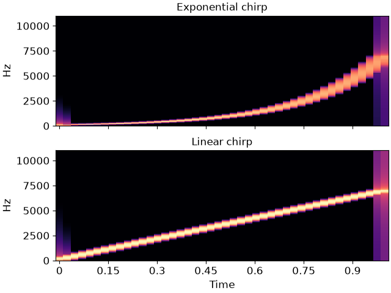

librosa.chirp
- librosa.chirp(*, fmin, fmax, sr=22050, length=None, duration=None, linear=False, phi=None)[source]
Construct a “chirp” or “sine-sweep” signal.
The chirp sweeps from frequency
fmintofmax(in Hz).- Parameters:
- fminfloat > 0
initial frequency
- fmaxfloat > 0
final frequency
- srnumber > 0
desired sampling rate of the output signal
- lengthint > 0
desired number of samples in the output signal. When both
durationandlengthare defined,lengthtakes priority.- durationfloat > 0
desired duration in seconds. When both
durationandlengthare defined,lengthtakes priority.- linearboolean
If
True, use a linear sweep, i.e., frequency changes linearly with timeIf
False, use a exponential sweep.
Default is
False.- phifloat or None
phase offset, in radians. If unspecified, defaults to
-np.pi * 0.5.
- Returns:
- chirp_signalnp.ndarray [shape=(length,), dtype=float64]
Synthesized chirp signal
- Raises:
- ParameterError
If either
fminorfmaxare not provided.If neither
lengthnordurationare provided.
See also
Examples
Generate a exponential chirp from A2 to A8
>>> exponential_chirp = librosa.chirp(fmin=110, fmax=110*64, duration=1, sr=22050)
Or generate the same signal using
length>>> exponential_chirp = librosa.chirp(fmin=110, fmax=110*64, sr=22050, length=22050)
Or generate a linear chirp instead
>>> linear_chirp = librosa.chirp(fmin=110, fmax=110*64, duration=1, linear=True, sr=22050)
Display spectrogram for both exponential and linear chirps.
>>> import matplotlib.pyplot as plt >>> fig, ax = plt.subplots(nrows=2, sharex=True, sharey=True) >>> S_exponential = np.abs(librosa.stft(y=exponential_chirp)) >>> librosa.display.specshow(librosa.amplitude_to_db(S_exponential, ref=np.max), ... x_axis='time', y_axis='linear', ax=ax[0]) >>> ax[0].set(title='Exponential chirp', xlabel=None) >>> ax[0].label_outer() >>> S_linear = np.abs(librosa.stft(y=linear_chirp)) >>> librosa.display.specshow(librosa.amplitude_to_db(S_linear, ref=np.max), ... x_axis='time', y_axis='linear', ax=ax[1]) >>> ax[1].set(title='Linear chirp')
